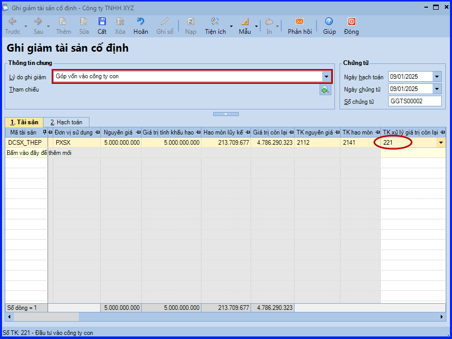
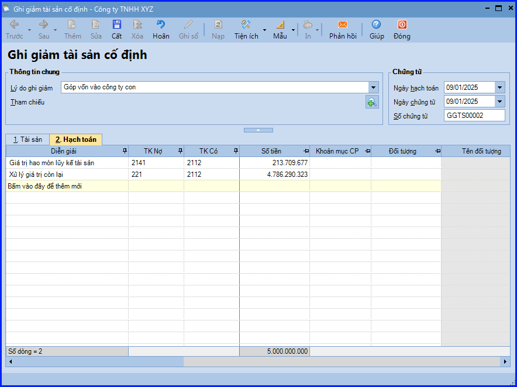
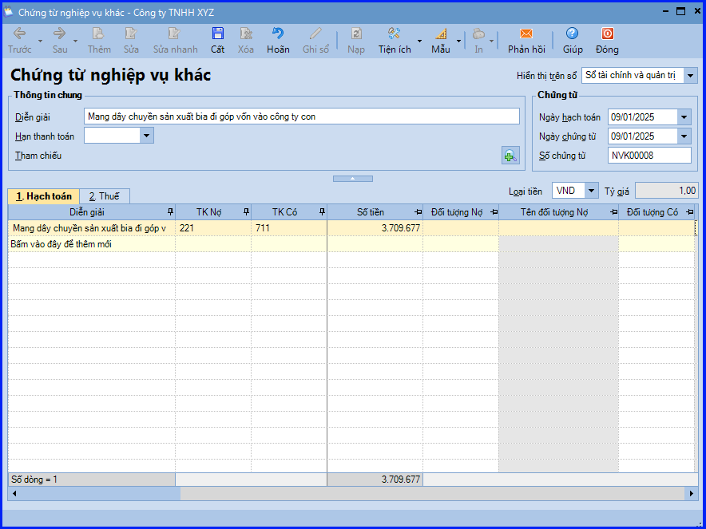

Hướng dẫn hạch toán mang TSCĐ đi góp vốn vào công ty con trên Misa
Khi phát sinh nghiệp vụ mang TSCĐ đi góp vốn vào công ty con, thông thường sẽ phát sinh các hoạt động sau:
- Thành lập hội đồng đánh giá gồm đại diện các bên góp vốn để định giá lại TSCĐ mang đi góp vốn
- Sau định giá được TSCĐ mang đi góp vốn, kế toán lập biên bản giao nhận TSCĐ
- Sau khi giao TSCĐ cho bên nhận góp vốn, đại diện các bên giao, bên nhận ký vào Biên bản giao nhận TSCĐ
- Căn cứ vào Biên bản định đánh giá TSCĐ, Biên bản giao nhận TSCĐ… kế toán hạch toán và ghi giảm TSCĐ trên sổ TSCĐ. Đồng thời hạch toán chênh lệch giữa giá trị TSCĐ theo đánh giá của hội đồng đánh giá với giá trị còn lại của TSCĐ trên sổ kế toán
1. Cách định khoản mang TSCĐ đi góp vốn vào công ty con
- Trường hợp giá trị còn lại đối với TSCĐ đem đi góp vốn nhỏ hơn giá trị do các bên đánh giá lại
- Nợ TK 221 - Đầu tư vào công ty con
- Nợ TK 214 - Hao mòn TSCĐ
- Có TK 211, 213, 217
- Có TK 711 - Thu nhập khác (Phần chênh lệch đánh giá tăng)
- Trường hợp giá trị còn lại của tài sản đem đi góp vốn lớn hơn giá trị do các bên đánh giá lại
- Nợ TK 221 - Đầu tư vào công ty con
- Nợ TK 214 - Hao mòn TSCĐ
- Nợ TK 811 - Chi phí khác (Phần chênh lệch đánh giá giảm)
- Có TK 211, 213, 217
2. Hướng dẫn thực hiện mang TSCĐ đi góp vốn vào công ty con trên phần mềm Misa
Bước 1: Ghi giảm TSCĐ mang đi đầu tư vào công ty con
- Vào phân hệ "Tài sản" => chọn tab "Ghi giảm" => chọn chức năng "Thêm".
- Chọn lý do ghi giảm là "Góp vốn vào công ty con".
- Tại tab "Tài sản": khai báo thông tin tài sản bị ghi giảm, đồng thời chọn lại thông tin TK xử lý giá trị còn lại là TK221.

- Tại tab "Hạch toán": ghi nhận bút toán ghi giảm TSCĐ do góp vốn vào công ty con.

- Các bạn ấn "Cất".
Bước 2: Hạch toán chênh lệch giá trị tài sản mang đi góp vốn vào công ty con (nếu có)
- Vào phân hệ "Tổng hợp" => chọn tab "Chứng từ nghiệp vụ khác" => chọn chức năng "Thêm\Chứng từ nghiệp vụ khác".

- Khai báo xong thông tin chứng từ, các bạn ấn "Cất".
KẾ TOÁN DIỆU TÂM chúc các bạn làm tốt!
=============================
Nếu bạn muốn thành thạo các kỹ năng làm kế toán trên phần mềm Misa
Thì bạn có thể tham khảo "Khóa Học Thực Hành Kế Toán Trên Phần Mềm Misa" tại Công ty đào tạo Kế Toán Diệu Tâm
Trong khóa học này, bạn sẽ được dạy cách lên sổ sách, lập báo cáo tài chính trên phần mềm Misa
Chi tiết về chương trình đào tạo bạn xem tại đây nhé: Khóa học thực hành kế toán trên Misa
=============================
=============================
Nếu bạn muốn thành thạo các kỹ năng làm kế toán trên phần mềm Misa
Thì bạn có thể tham khảo "Khóa Học Thực Hành Kế Toán Trên Phần Mềm Misa" tại Công ty đào tạo Kế Toán Diệu Tâm
Trong khóa học này, bạn sẽ được dạy cách lên sổ sách, lập báo cáo tài chính trên phần mềm Misa
Chi tiết về chương trình đào tạo bạn xem tại đây nhé: Khóa học thực hành kế toán trên Misa
=============================